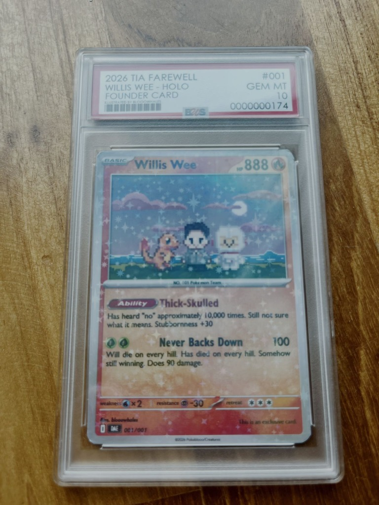

What I did at TIA
15 May 2026
Another common question: what did you actually do at TIA?
Short answer: I ran it end-to-end for 16 years, with a lot of help. Special thanks to Maria.
Longer answer below. I stayed closest to product, engineering, design, editorial, and sales.
My top priority was always keeping TIA focused on our core mission: to build and serve the startup community. That required deeply understanding what would actually move the needle for them.
We drew inspiration directly from the community - listening to what they said, reading what they wrote, and watching what they did - to understand their evolving needs. Then we baked those insights into our product roadmap, whether it was through new software, events, or optimizing existing products. We also kept a close eye on evolving market forces, like the drop in startup fundraising activity and the rise of AI, that were impacting our community and business.
But we couldn't do everything. So we prioritized ruthlessly, routinely killing products that weren't working just to free up bandwidth. And all of this had to be executed with strict P&L discipline, ensuring our efforts were sustainable in the long run.
Below are some of the things we built. It’s not the full list. Most of these I led and again, I get a lot of help from the team.
❤️ Product, engineering, design
- News by AI → a semi-agentic workflow producing ~1,000 articles per month with food-for-thought and related context built in. Humans weren't replaced; they were freed up to write deeper, more analytical pieces AI can't match. Result: +30% monthly traffic. Users love "🧠 Food for thought." Built together with Terence and Haresh
- Daily Toast → built in 8 weeks. Hit ~15M views in the first 6 months. 30+ evals (big + small) to ensure the AI version beat human-written copy in blind tests before going to prod. — built together with Jon and Haresh. I led this one with a lot of intensity. Much fun.
- AI editor on Google Docs → cut the copyeditor's workload meaningfully. — I’m more like a cursor on this. Credits to Terence and Ernie
- Automated social distribution → humans stopped waiting around, output got more variation, small uplift in impressions and conversions. Everyone is happier. - Credits to Terence.
- PDF resume parsing pipeline → replaced a $20k/year tool with our own tool. Yay. —> Credits to Haresh, Ivan
🤝 Sales and biz dev
Built an end-to-end, data-driven sales function: lead gen → closing → account servicing. Lead gen stayed under my charge and scaled to $1M (plus-minus, depending on year) in attributable revenue using product-dev discipline (i.e. AI lead gen workflow + content marketing.) When needed, I did sales too and topped the chart. TY Ummi for experimenting lead gen with me. TY Miguel, Jessica, Regina and more for helping with key accounts.
Opened offices in 🇨🇳, 🇯🇵, 🇻🇳, 🇮🇳, and 🇮🇩. For each country, I dedicated time. Spent a year in Beijing and a year in Tokyo. All failed except Indonesia. Many reasons why Indonesia succeeded. One is people, special thanks to Hendri, Glenn, Putra, Minghao, and Willson. And another is that I have personally spent significant time in Jakarta.
✏️ Editorial
This is really is Terence’s territory and I gave him full control. We will, of course, time to time disagree but he has the final say. In rare time, even if we end up in trouble, we were always in it together. No finger pointing. I used to write a lot more often, but less as I got busy with other matters and Terence really way better chief editor than me.
⚠️ Fun experiments that failed
- AI avatars of journalists. Good fun. Poor metric/ROI.
- Outbound sales emails at scale. Fastest way to burn a channel.
- News in brief / AI summaries. No one cared.
- AskTIA. AI-written Q&As based on our articles. Only search engines and bots cared. Not humans. Sad.
Failures are mine. The lessons I keep.
And now, as an advisor, I …
👍 am a friend, cheerleader, and coach to Terence, TIA's new leader.
🛠️ Assist Bernard (TIA's head of engineering) on an agentic product-dev tool → a fleet of agents that ships software (internally, it's called Despicable). Also experimenting with agentic workflows for other functions (i.e. marketing) in sandboxes.
There are lot of hidden heroes -- Melinda, Latha, Celine, Cheng Yong, Ilham, Kelyn, Rizal, alumnus, volunteers, , and so many more. Without them I couldn’t be in my zone of genius and keep building and serving TIA’s mission.
